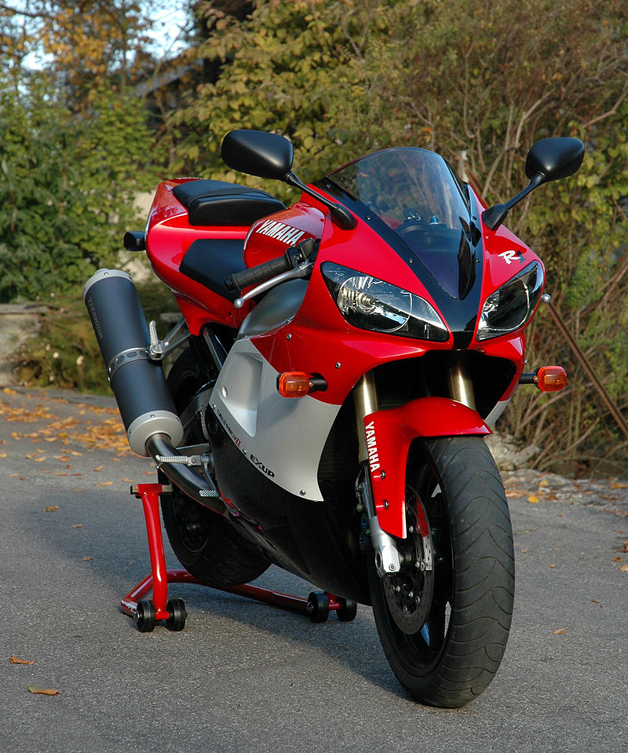

Ямаха випустила YZF-R1 після переробки, в результаті якої двигун Genesis змістив колінчастий вал і ведучий і вторинний вали коробки передач. Це «ущільнення» двигуна дало колосальний ефект - загальна довжина блоку двигуна стала дуже малою. Це дозволило значно скоротити колісну базу, що дало набагато кращу керованість і оптимізуваний центр тяжкості.
Модель Yamaha YZF-R1 була випущена в червоно-білому і синьому варіантах. В Європі синє забарвлення виявилася популярнішим і стало дефіцитним, до того ж ранні моделі відкликалися через проблеми зі зчепленням. Коефіцієнт стиснення у мотоцикла був 12.4:1. при 6-ступінчастій коробці передач. Сучасна Ямаха вважає R1 прикладом справжнього «Kando». («Kando» - це японське слово для позначення одночасних почуттів радості і хвилювання, яке відчуває людина, коли стикається з явищем виняткової цінності).
